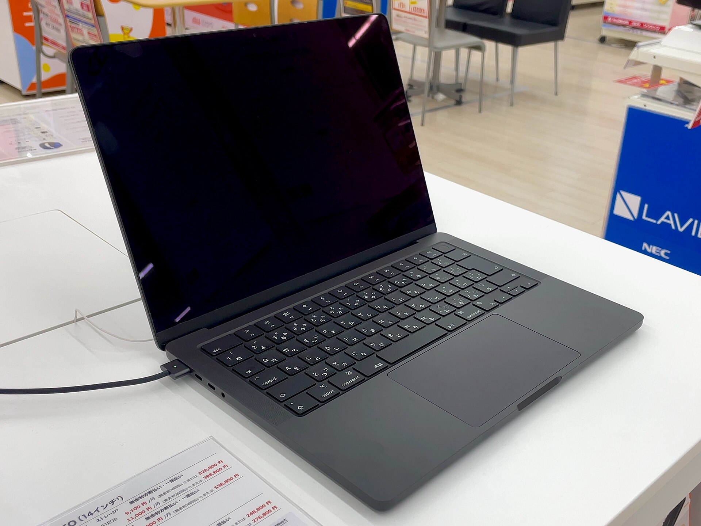

36歳、一児の親、エンジニア歴15年目の自分が、気になったことを記録しておく場所。手を付ける前のメモ代わり。タグで絞り込める。
このサイトのデザインに使ったAI用スキル。作者はミュンヘンの個人開発者で、目的はAIに平均的なページを作らせないこと。
2026年11月2日

Mac mini（M6）とMacBook Air（M5）・Pro（M6）を、iOSアプリ開発の場面ごとに比べた。決め手は場所とモニター。
M4のときより5万5千円上がった新型。どの構成なら後悔しないか、価格表と見積もりで整理した。